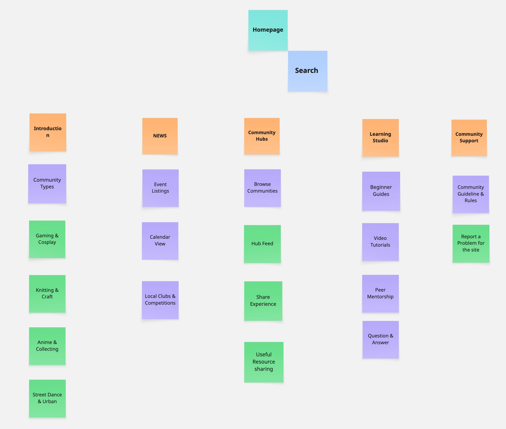

Website Sitemap
This sitemap outlines the core structure of the website based on the client needs and user story analysis from WP2. The layout is designed to support a hobby-focused, inclusive, and collaborative digital community.
Visual Site Map
- Welcome Overview
- Community Focus Introduction
- Gaming & Cosplay (Alex)
- Anime & Collecting (Kenji)
- Music & Gigs (Lila)
- Knitting & Craft (Fatima)
- Street Dance & Urban (Diego)
- Beginner Guides
- Video Tutorials
- Tag-based Navigation
- Event Listings
- Calendar View
- Local Clubs & Competitions
- Pattern & Project Exchange
- Zine & Playlist Sharing
- Group Project Board
- Code of Conduct
- Report & Safety Tools
- Accessibility Settings
- Language Toggle
This section acknowledges the role of AI in supporting the design process.
- Client Values
- Design Goals